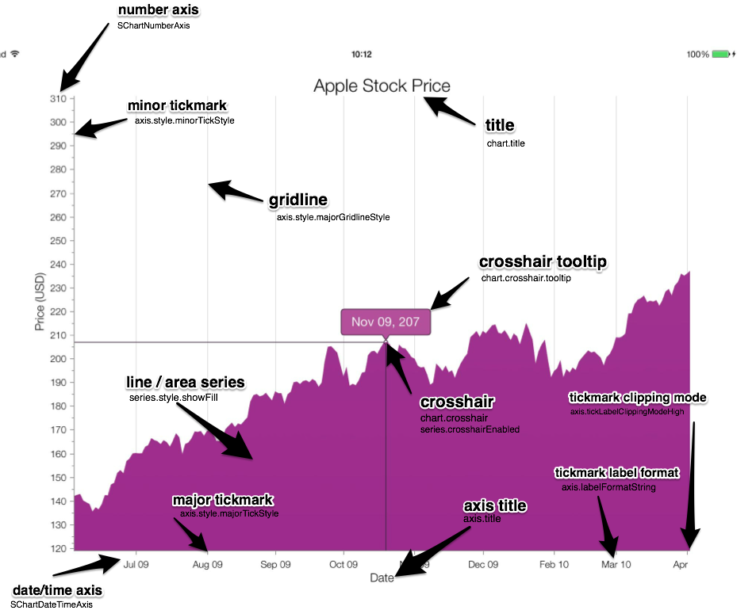

SChartAxis Class Reference
| Inherits from | NSObject |
| Declared in | SChartAxis.h |
| Availability | Standard Premium |
| Related samples | Area BarChart ColumnChart FinancialChart LargeDataSet LineChart |
Overview
The SChartAxis is responsible for managing the coordinate space of the chart. It is the link between the set of real data in a series and the laying down of that series on a chart in a desired manner. Each series on the chart is linked to an axis and this SChartAxis is responsible for managing all of the series linked to it. Here is a sample chart with some key axis features highlighted:

For cartesian series, it is expected that you will provide instances of a subclass of SChartAxis each for the xAxis and yAxis of the chart. If not set, both axes will default to instances of SChartNumberAxis.
The axis range can be set to a desired range or left to calculate its own minimum and maximum. When auto-calculating the range, it will consider all data series associated with it.
The axis is also the home of the tick marks and their labels. These can be auto-calculated or set to specific values.
More information about using SChartAxis can be found in the user guide.
Tasks
Initializing the axis
-
– initCreate an axis for a given chart area.
-
– initWithRange:Create an axis for a given chart area with a default range.
-
chartA pointer to the parent chart
property
Positioning the Axis
-
axisPositionThe
propertySChartAxisPositiondefines whether the axis will be positioned at the normal or reverse location. -
axisPositionValueThe value at which an axis intersects with the opposite axis. For example, if this is set to 0 on a yAxis, it will intersect with the xAxis at the point which corresponds to a value of 0 in data terms.
property -
axisLabelsAreFixedThis property determines whether the axis labels will move with the axis lines and tick marks when an axis position value has been set.
property -
– isXAxisWhether or not its
axisOrientationis horizontal
Styling
-
styleThe
propertySChartAxisStyleobject that manages the appearance of the axis. -
widthSpecifies a fixed width for the axis area that won’t change.
property -
titleThe text to display in the axis title.
property -
titleLabelThe title for the axis.
property
Ranges
-
axisRangeThe current displayed range of the axis.
property -
dataRangeA readonly property indicating the total data range across all series represented by this axis.
property -
defaultRangeThis is the range that will be displayed after the chart initially loads - and if the zoom is reset.
property -
rangePaddingLowIn data terms, the amount by which the lower limit of the axis range will be lowered past the range of the data.
property -
rangePaddingHighIn data terms, the amount by which the upper limit of the axis range will be raised past the range of the data.
property -
allowPanningOutOfDefaultRangeWhether or not the user is permitted to pan outside of the user-set default range.
property -
allowPanningOutOfMaxRangeWhether or not the user is permitted to pan outside of the union of the data range and the default range
property -
animationEdgeBouncingWhether or not the axis allows the range to temporarily go past the limit specified before bouncing back in
property -
animationEnabledWhether or not the axis animates when zooming programmatically, or via double-tap on box gesture.
property -
axisFrameThe frame bounding the area where the axis is drawn.
property -
axisOrientationThe orientation of the axis.
property -
secondaryAxisOffsetThe offset to the axis object from the edge of the canvas, in points.
property -
– setRangeWithMinimum:andMaximum:Attempts to set the current visible range
axisRangeto a range with the given minimum and maximum values. -
– setRangeWithMinimum:andMaximum:withAnimation:Attempts to set the current visible range
axisRangeto a range with the given minimum and maximum values. -
– getNewRangeWithMinimum:withMaximum:Creates a new range object with the given maximum and minimum
-
– visibleRangeReturns a range within which all the visible (non-hidden) series on this axis will be displayed.
Tickmarks and labels
-
majorTickFrequencyAn appropriate object representing the major tick mark frequency
property -
minorTickFrequencyAn appropriate object representing the minor tick mark frequency
property -
– currentMajorTickFrequencyReturns the current major tick frequency in use by this axis.
-
– currentMinorTickFrequencyReturns the current minor tick frequency in use by this axis.
-
anchorPointThe start point for the calculation of tick marks.
property -
labelFormatStringA string to format each tick mark label - actual format is dependent on axis type. If an axis is auto-calculating tick marks - it will select an appropriate label format (ie: months, days, hours, etc). However, setting this value will override all tick mark labels to use this formatter.
property -
labelFormatterA label formatter for tick mark labels.
property -
tickLabelClippingModeHighThis property allows you to alter the tick label clipping mode for the upper end of an axis.
property -
tickLabelClippingModeLowThis property allows you to alter the tick label clipping mode for the lower end of an axis.
property -
discontinuousTickLabelClippingThis property comes into effect for discontinuous axes over a discontinuity. When there are labels either side of a discontinuity which overlap, either the higher or lower label will be removed, this property controls which.
property -
minimumFreeAxisSpaceThis property allows you to specify the percentage of the axis space that should be empty, available for padding around tick labels. This can be used to control tick-label over-crowding.
property -
– alterTickMark:This will call
sChart:alterTickMark:onAxis:if your delegate implements it. Implement this method in your axis subclass to alter tickmarks on that axis only. -
calculateMajorTickFrequencyFromDiscontinuousRangeThis property controls how the auto-tick-frequency calculations are done. Normally, the axis will use the full range of data to calculate how often to place a tick-mark, however if the range has discontinuities, this option allows the axis to exclude the discontinuities in its calculations of the range over which the tick marks are added.
property -
tickLabelRefreshRateProvides the ability to customize the rate at which the tick labels are refreshed. Decreasing the rate at which they are updated can improve performance, particularly on older devices.
property
BarColumn Series
-
barColSpacingThe smallest change in value between any adjacent bars or columns.
property -
barColMinThe minimum value of a bar or column across all of the bar/column series for this axis. You can set this by using the appropriate
propertyconfigureBars:withMinY:withMaxY:orconfigureBars:withMinY:withMaxY:method for the axis orientation. -
barColMaxThe maximum value of a bar or column across all of the bar/column series for this axis. You can set this by using the appropriate
propertyconfigureBars:withMinY:withMaxY:orconfigureBars:withMinY:withMaxY:method for the axis orientation. -
– configureColumns:withMinX:withMaxX:Provide bounds and spacing data for column series within the chart to improve performance
-
– configureBars:withMinY:withMaxY:Provide bounds and spacing data for bar series within the chart to improve performance
Zooming
-
enableGestureZoomingproperty -
– setZoom:fromPosition:withAnimation:andBounceLimits:Sets the zoom of the axis, based around a fixed point.
-
– setZoom:fromPosition:withAnimation: -
– setZoom:fromPosition: -
– setZoom:withAnimation: -
– setZoom: -
– zoomToPoint:withRange:withAnimation:usingBounceLimits:Zoom to a set range, centred on a point.
-
– zoomToPoint:withRange: -
– resetZoomLevelWithAnimation:Sets the axis back to its original zoom
-
– resetZoomLevel -
– setZoomLevel:Sets the zoom to a standard level.
-
– zoomReturns the current zoom level, relative to the
defaultRangeof the axis. -
enableMomentumZoomingEnables momentum zooming
property -
isMomentumZoomingWill always be
propertyYESwhen the axis is decelerating from a pinch zoom gesture -
zoomMomentumDelayThe time steps of each deceleration after a pinch zoom gesture.
property -
zoomMomentumFactorThe factor by which the velocity of the gesture will decay during one deceleration time period.
property
Panning
-
enableGesturePanningSet to
propertyYESto allow swipe gestures to pan the chart. -
– panByValue:withAnimation:withBounceLimits:andRedraw:Pan the axis range by an explicit amount
-
– panByValue:withAnimation:withBounceLimits:See
panByValue:withAnimation:andBounceLimits:andRedraw:. -
– panByValue:withAnimation:See
panByValue:withAnimation:andBounceLimits:andRedraw:. -
– panByValue:See
panByValue:withAnimation:andBounceLimits:andRedraw:. -
enableMomentumPanningEnables momentum panning
property -
isMomentumPanningWill always be
propertyYESwhen the axis is decelerating from a pan swipe gesture -
panMomentumDelayThe time steps of each deceleration after a pan swipe gesture.
property -
panMomentumFactorThe factor by which the velocity of the gesture will decay during one deceleration time period.
property
Data - Pixel Conversions
-
– pixelValueForDataValue:Returns the pixel value, in the coordinate system of the plot area, of the given data value along this axis.
-
– dataValueForPixelValue:Returns the data value of the given pixel value along this axis, in the coordinate system of the plot area.
-
– offsetForSeries:Returns the difference in data terms between where data in a series is drawn to it’s value on this axis.
Values in Data Terms
-
– stringForId:Returns a string representation of the given object.
Drawing
-
– spaceRequiredToDrawWithTitle:Returns the amount of space in points needed to draw the axis between the plot area and the edge of the chart frame.
Properties
allowPanningOutOfDefaultRange
Whether or not the user is permitted to pan outside of the user-set default range.
@property (nonatomic) BOOL allowPanningOutOfDefaultRangeDiscussion
With a user-set default range this can be used to either limit panning and zooming to a subset of the data or to allow panning or zooming outside of the data range but whilst still setting limits. If the default range is not set, it defaults to dataRange and `allowPanningOutOfMaxRange' should be used instead.
By default, this property is set to YES.
Declared In
SChartAxis.hallowPanningOutOfMaxRange
Whether or not the user is permitted to pan outside of the union of the data range and the default range
@property (nonatomic) BOOL allowPanningOutOfMaxRangeDiscussion
If this is enabled but allowPanningOutOfDefaultRange is disabled, panning will still be restricted to the data range.
By default, this property is set to NO.
Declared In
SChartAxis.hanchorPoint
The start point for the calculation of tick marks.
@property (nonatomic, retain) id anchorPointDiscussion
For example, if your axisRange is @1 to @9, your anchorPoint is @0 and the currentMajorTickFrequency is @2, you will get tickmarks and labels at @2, @4, @6 and @8, assuming that the labels' text and the clipping settings permit.
Regardless of whether a tick mark frequency has been set or automatically calculated, it must start somewhere. This value acts as the origin point for tickmarks on the axis.
By default, this property is set to the minimum of the dataRange.
Declared In
SChartAxis.hanimationEdgeBouncing
Whether or not the axis allows the range to temporarily go past the limit specified before bouncing back in
@property (nonatomic) BOOL animationEdgeBouncingDiscussion
If this is enabled, the range will bounce back into the given limit. If there is no range limit, this option does nothing.
By default, this property is set to YES.
Declared In
SChartAxis.hanimationEnabled
Whether or not the axis animates when zooming programmatically, or via double-tap on box gesture.
@property (nonatomic) BOOL animationEnabledDiscussion
If this is enabled, the axis will zoom smoothly from starting to target zoom levels.
By default, this property is set to YES.
Warning: Animation is not currently supported by radial charts.
Declared In
SChartAxis.haxisFrame
The frame bounding the area where the axis is drawn.
@property (nonatomic) CGRect axisFrameDiscussion
This area in terms of the chart frame within which the axis line, tickmarks and ticklabels are drawn. It can have a fixed width if the width property is set, otherwise it wil be dynamic and affected by the tickmarks and their labels.
Warning: Setting an explicit axis frame is not currently supported by radial charts.
Declared In
SChartAxis.haxisLabelsAreFixed
This property determines whether the axis labels will move with the axis lines and tick marks when an axis position value has been set.
@property (nonatomic) BOOL axisLabelsAreFixedDiscussion
If this is set to YES, labels will stay fixed at the bottom/left or top/right of the chart depending on the axisPosition parameter.
Declared In
SChartAxis.haxisOrientation
The orientation of the axis.
@property (nonatomic, readonly) SChartOrientation axisOrientationDiscussion
Axis objects are universal and may be used as an x-axis (horizontal) or as a y-axis (vertical).
- SChartOrientationHorizontal: Configures the axis to be used as an x-axis (horizontal).
- SChartOrientationVertical: Configures the axis to be used a y-axis (vertical).
This property is determined when the axis is assigned to the chart.
Warning: With regards to radial charts, horizontal is the outer (radial) axis, and vertical is the inner (polar) axis.
Declared In
SChartAxis.haxisPosition
The SChartAxisPosition defines whether the axis will be positioned at the normal or reverse location.
@property (nonatomic) SChartAxisPosition axisPositionDiscussion
- SChartAxisPositionNormal: For x-axes, the ‘normal’ position is below the plot area. For y-axes, the ‘normal’ position is to the left of the plot area.
- SChartAxisPositionReverse: For x-axes, the ‘reverse’ position is above the plot area. For y-axes, the ‘reverse’ position is to the right of the plot area.
Often, it is a good idea when adding a secondary axis, using addXAxis or addYAxis, to position one axis in each position.
Warning: Radial charts do not respond to SChartAxisPositionReverse.
Declared In
SChartAxis.haxisPositionValue
The value at which an axis intersects with the opposite axis. For example, if this is set to 0 on a yAxis, it will intersect with the xAxis at the point which corresponds to a value of 0 in data terms.
@property (nonatomic, retain) NSNumber *axisPositionValueDiscussion
If there is more than one axis of the other orientation on the chart, the primary axis will be used.
Warning: Axes on a radial chart do not support axis position.
Declared In
SChartAxis.haxisRange
The current displayed range of the axis.
@property (nonatomic, retain, readonly) SChartRange *axisRangeDiscussion
This property is the actual range currently displayed on the visible area of the chart- which may not be the range that was explicitly set. The axis may make small adjustments to the range to make sure that whole bars are displayed etc. This is a readonly property - explicit requests to change the axis range should be made through the method setRangeWithMinimum:andMaximum:
See Also
Declared In
SChartAxis.hbarColMax
The maximum value of a bar or column across all of the bar/column series for this axis.
You can set this by using the appropriate configureBars:withMinY:withMaxY: or configureBars:withMinY:withMaxY: method for the axis orientation.
@property (nonatomic, readonly) NSNumber *barColMaxDeclared In
SChartAxis.hbarColMin
The minimum value of a bar or column across all of the bar/column series for this axis.
You can set this by using the appropriate configureBars:withMinY:withMaxY: or configureBars:withMinY:withMaxY: method for the axis orientation.
@property (nonatomic, readonly) NSNumber *barColMinDeclared In
SChartAxis.hbarColSpacing
The smallest change in value between any adjacent bars or columns.
@property (nonatomic) double barColSpacingDiscussion
Specifying this can improve the render time of the chart - it will not have to traverse all of the data to compare differences.
Declared In
SChartAxis.hcalculateMajorTickFrequencyFromDiscontinuousRange
This property controls how the auto-tick-frequency calculations are done. Normally, the axis will use the full range of data to calculate how often to place a tick-mark, however if the range has discontinuities, this option allows the axis to exclude the discontinuities in its calculations of the range over which the tick marks are added.
@property (nonatomic) BOOL calculateMajorTickFrequencyFromDiscontinuousRangeDiscussion
For example - you have a year range, but are excluding 7 months using
discontinuous periods. If this property is NO, the tick labels will be added
as if the range is one year. If this property is YES, the tick labels will be
added as if the range is 5 months (12 - 7).
If YES, the axis will exclude discontinuities when calculating the range.
By default, this property is NO.
Declared In
SChartAxis.hchart
A pointer to the parent chart
@property (nonatomic, assign) ShinobiChart *chartDiscussion
The axis retains a handle on the chart using it so that it can access user-set drawing parameters.
Declared In
SChartAxis.hdataRange
A readonly property indicating the total data range across all series represented by this axis.
@property (nonatomic, readonly) SChartRange *dataRangeDiscussion
These are absolute minimum and absolute maximum values from the data series represented by this axis.
This range does not necessarily represent exactly the range of what is drawn on the axis, depending on how the data is visualised - for this see visibleRange.
See Also
Declared In
SChartAxis.hdefaultRange
This is the range that will be displayed after the chart initially loads - and if the zoom is reset.
@property (nonatomic, retain) SChartRange *defaultRangeDiscussion
By default, this property is set to dataRange, but can be set to custom values.
See Also
Declared In
SChartAxis.hdiscontinuousTickLabelClipping
This property comes into effect for discontinuous axes over a discontinuity. When there are labels either side of a discontinuity which overlap, either the higher or lower label will be removed, this property controls which.
@property (nonatomic) SChartDiscontinuousTickLabelClipping discontinuousTickLabelClippingDiscussion
- SChartDiscontinuousTickLabelClippingLow: Removes the lower tick labels.
- SChartDiscontinuousTickLabelClippingHigh: Removes the higher tick labels.
By default, this property is set to ‘SChartDiscontinuousTickLabelClippingLow’.
Declared In
SChartAxis.henableGesturePanning
Set to YES to allow swipe gestures to pan the chart.
@property (nonatomic) BOOL enableGesturePanningDiscussion
Warning: Panning isn’t currently supported by radial charts.
Declared In
SChartAxis.henableGestureZooming
@property (nonatomic) BOOL enableGestureZoomingDiscussion
Warning: Zooming isn’t currently supported by radial charts.
Declared In
SChartAxis.henableMomentumPanning
Enables momentum panning
@property (nonatomic, assign) BOOL enableMomentumPanningDiscussion
When momentum panning is enabled, fast pan gestures will cause the chart to continue to pan during a brief ‘slowing down’ period rather than stopping immediately.
By default, this property is set to NO.
Declared In
SChartAxis.henableMomentumZooming
Enables momentum zooming
@property (nonatomic, assign) BOOL enableMomentumZoomingDiscussion
When momentum zooming is enabled, fast pinch gestures will cause the chart to continue to zoom during a brief ‘slowing down’ period rather than stopping immediately.
Declared In
SChartAxis.hisMomentumPanning
Will always be YES when the axis is decelerating from a pan swipe gesture
@property (nonatomic, readonly) BOOL isMomentumPanningDeclared In
SChartAxis.hisMomentumZooming
Will always be YES when the axis is decelerating from a pinch zoom gesture
@property (nonatomic, readonly) BOOL isMomentumZoomingDeclared In
SChartAxis.hlabelFormatString
A string to format each tick mark label - actual format is dependent on axis type. If an axis is auto-calculating tick marks - it will select an appropriate label format (ie: months, days, hours, etc). However, setting this value will override all tick mark labels to use this formatter.
@property (nonatomic, retain) NSString *labelFormatStringDiscussion
- A number axis will pass the tick value as an NSNumber to NSString’s
stringWithFormat:method so set a number format string, ie@"%1.2f mm". - A date axis will pass the tick value as an NSDate through an
NSDateFormatterso set the string as if you were setting a date formatter’sdateFormatproperty, i.e@"dd MMM". - A category axis will pass the tick value as an NSString to NSString’s
stringWithFormat:method so set any suitable format string, i.e @“%@ District”.
Declared In
SChartAxis.hlabelFormatter
A label formatter for tick mark labels.
@property (nonatomic, retain) SChartTickLabelFormatter *labelFormatterDiscussion
Use this to set formatting options for tick labels on this axis - currencies, (negative) value styles etc.
See Also
Declared In
SChartAxis.hmajorTickFrequency
An appropriate object representing the major tick mark frequency
@property (nonatomic, retain) id majorTickFrequencyDiscussion
If this value is set, the chart will not make any auto-calculations for major tick marks and only display a major tick mark at this frequency, regardless of zoom level. The definition of appropriate value is dependent upon the axis type - ie: SChartNumberAxis, SChartDateTimeAxis. The first major tick mark will be at the absolute minimum data value across all series for this axis - with subsequent major tick marks incrementing by the frequency. To change this initial value see anchorPoint. By default an appropriate major tick mark value will be selected by the chart and will adapt as the user zooms the chart.
Declared In
SChartAxis.hminimumFreeAxisSpace
This property allows you to specify the percentage of the axis space that should be empty, available for padding around tick labels. This can be used to control tick-label over-crowding.
@property (nonatomic) double minimumFreeAxisSpaceDiscussion
When tick labels are added, if the remaining space on the axis is less than
minimumFreeAxisSpace, then the frequency of labels will be decreased until
sufficient space remains after adding each label.
By default, this property is set to ‘0.01’, or 1%.
Declared In
SChartAxis.hminorTickFrequency
An appropriate object representing the minor tick mark frequency
@property (nonatomic, retain) id minorTickFrequencyDiscussion
If this value is set, the chart will not make any auto-calculations for minor tick marks and only display a minor tick mark at these values, regardless of zoom level. The first minor tick mark will be at the absolute minimum data value across all series for this axis - with subsequent minor tick marks incrementing by the frequency. To change this initial value see anchorPoint. By default an appropriate minor tick mark value will be selected by the chart and will adapt as the user zooms the chart. In order for the chart to adhere to a non-nil value you have assigned to this property you must also set a majorTickFrequency.
Declared In
SChartAxis.hpanMomentumDelay
The time steps of each deceleration after a pan swipe gesture.
@property (nonatomic) double panMomentumDelayDiscussion
If enableMomentumPanning is set to YES, the velocity of the swipe gesture will decay over a number of increments. These increments are a fixed time period specified here. During this fixed period the velocity will decay by a factor panMomentumFactor
By default, this property is set to 0.0f.
Declared In
SChartAxis.hpanMomentumFactor
The factor by which the velocity of the gesture will decay during one deceleration time period.
@property (nonatomic) double panMomentumFactorDiscussion
If enableMomentumPanning is set to YES, the velocity of the swipe gesture will decay over a number of increments. These increments are a fixed time period specified in panMomentumDelay. During this fixed period the velocity will decay by this factor.
By default, this property is set to 0.98f.
Declared In
SChartAxis.hrangePaddingHigh
In data terms, the amount by which the upper limit of the axis range will be raised past the range of the data.
@property (nonatomic, retain) id rangePaddingHighDiscussion
Warning: This is only added when the range is automatically calculated. Setting the range explicitly will result in the rangePaddingHigh being ignored.
By default, this property is set to 0.
Declared In
SChartAxis.hrangePaddingLow
In data terms, the amount by which the lower limit of the axis range will be lowered past the range of the data.
@property (nonatomic, retain) id rangePaddingLowDiscussion
Warning: This is only added when the range is automatically calculated. Setting the range explicitly will result in the rangePaddingLow being ignored.
By default, this property is set to 0.
Declared In
SChartAxis.hsecondaryAxisOffset
The offset to the axis object from the edge of the canvas, in points.
@property (nonatomic, assign) CGFloat secondaryAxisOffsetDiscussion
For x-axes, this is from the bottom edge of the canvas frame for axes at the ‘normal’ axisPosition and from the top for y-axes at the ‘reverse’ axisPosition.
For y-axes, this is from the left edge of the canvas frame for axes at the ‘normal’ axisPosition and from the right for y-axes at the ‘reverse’ axisPosition.
Declared In
SChartAxis.hstyle
The SChartAxisStyle object that manages the appearance of the axis.
@property (nonatomic, retain) SChartAxisStyle *styleDiscussion
Setting these values will override any values set by the theme. Calling applyTheme on the chart, though, will reapply the theme style.
Declared In
SChartAxis.htickLabelClippingModeHigh
This property allows you to alter the tick label clipping mode for the upper end of an axis.
@property (nonatomic) SChartTickLabelClippingMode tickLabelClippingModeHighDiscussion
- SChartTickLabelClippingModeTicksAndLabelsPersist: Keeps both the label and tick visible for as long as possible, allowing the label to overlap with adjacent axes.
- SChartTickLabelClippingModeTicksPersist: Keeps the tick mark visible for as long as possible and clip the label as soon as it reaches the edge of its view.
- SChartTickLabelClippingModeNeitherPersist: Keeps the tick mark visible as long as the tick label is visible - as soon as the tick label reaches its bounds, and is clipped, clip the tick mark too.
Warning: Tick label clipping isn’t currently supported on radial charts.
Declared In
SChartAxis.htickLabelClippingModeLow
This property allows you to alter the tick label clipping mode for the lower end of an axis.
@property (nonatomic) SChartTickLabelClippingMode tickLabelClippingModeLowDiscussion
See tickLabelClippingModeHigh.
Warning: Tick label clipping isn’t currently supported on radial charts.
Declared In
SChartAxis.htickLabelRefreshRate
Provides the ability to customize the rate at which the tick labels are refreshed. Decreasing the rate at which they are updated can improve performance, particularly on older devices.
@property (nonatomic, copy) id<SChartTickLabelRefreshRate> tickLabelRefreshRateDiscussion
Default implementation is SChartTickLabelRefreshRateDeviceBased.
Declared In
SChartAxis.htitle
The text to display in the axis title.
@property (nonatomic, retain) NSString *titleSee Also
Declared In
SChartAxis.htitleLabel
The title for the axis.
@property (nonatomic, retain) SChartTitle *titleLabelSee Also
Declared In
SChartAxis.hwidth
Specifies a fixed width for the axis area that won’t change.
@property (nonatomic, retain) NSNumber *widthDiscussion
This is useful to fix the axis in position to align multiple charts. However, it may restrict the options for labelling the chart.
Warning: A radial chart will not respond to this value.
Declared In
SChartAxis.hzoomMomentumDelay
The time steps of each deceleration after a pinch zoom gesture.
@property (nonatomic) double zoomMomentumDelayDiscussion
If enableMomentumZooming is set to YES, the velocity of the zoom pinch gesture will decay over a number of increments. These increments are a fixed time period specified here. During this fixed period the velocity will decay by a factor zoomMomentumFactor.
By default, this property is set to 0.0f.
Declared In
SChartAxis.hzoomMomentumFactor
The factor by which the velocity of the gesture will decay during one deceleration time period.
@property (nonatomic) double zoomMomentumFactorDiscussion
If enableMomentumZooming is set to YES, the velocity of the zoom pinch gesture will decay over a number of increments. These increments are a fixed time period specified in zoomMomentumDelay. During this fixed period the velocity will decay by this factor.
By default, this property is set to 0.75f.
Declared In
SChartAxis.hInstance Methods
alterTickMark:
This will call sChart:alterTickMark:onAxis: if your delegate implements it. Implement this method in your axis subclass to alter tickmarks on that axis only.
- (void)alterTickMark:(SChartTickMark *)tickMarkDiscussion
This method gives you each tickMark just before it is added to its axis. Use this to set colors, borders, or even move the tickmark’s label elsewhere.
Declared In
SChartAxis.hconfigureBars:withMinY:withMaxY:
Provide bounds and spacing data for bar series within the chart to improve performance
- (void)configureBars:(double)barSpacing withMinY:(NSNumber *)minY withMaxY:(NSNumber *)maxYParameters
- barSpacing
the minimum distance between any two bars along the axis, in data terms.
- minY
the smallest
yValueof any bar on the axis.
- maxY
the largest
yValueof any bar on the axis.
Declared In
SChartAxis.hconfigureColumns:withMinX:withMaxX:
Provide bounds and spacing data for column series within the chart to improve performance
- (void)configureColumns:(double)colSpacing withMinX:(NSNumber *)minX withMaxX:(NSNumber *)maxXParameters
- colSpacing
the minimum distance between any two columns along the axis, in data terms.
- minX
the smallest
xValueof any column on the axis.
- maxX
the largest
xValueof any column on the axis.
Declared In
SChartAxis.hcurrentMajorTickFrequency
Returns the current major tick frequency in use by this axis.
- (id)currentMajorTickFrequencyDiscussion
Warning: Important majorTickFrequency returns the frequency that you have manually set, whereas currentMajorTickFrequency returns the frequency currently in use - the two are not necessarily the same.
Declared In
SChartAxis.hcurrentMinorTickFrequency
Returns the current minor tick frequency in use by this axis.
- (id)currentMinorTickFrequencyDiscussion
Warning: Important minorTickFrequency returns the frequency that you have manually set, whereas currentMinorTickFrequency returns the frequency currently in use - the two are not necessarily the same.
Declared In
SChartAxis.hdataValueForPixelValue:
Returns the data value of the given pixel value along this axis, in the coordinate system of the plot area.
- (id)dataValueForPixelValue:(CGFloat)pxDiscussion
If the pixel value given is negative, or is larger than the respective height/width of the plot area in pixels, than this method may return a data value that is not currently in range of the axis.
Warning: Currently, this method will not return a data value for radial charts.
Declared In
SChartAxis.hgetNewRangeWithMinimum:withMaximum:
Creates a new range object with the given maximum and minimum
- (SChartRange *)getNewRangeWithMinimum:(NSNumber *)minimum withMaximum:(NSNumber *)maximumDiscussion
The subclass of SChartRange that is returned will correspond to the axis type.
See Also
Declared In
SChartAxis.hinitWithRange:
Create an axis for a given chart area with a default range.
- (id)initWithRange:(SChartRange *)rangeDiscussion
See defaultRange for the implications of setting this type of range.
Declared In
SChartAxis.hisXAxis
Whether or not its axisOrientation is horizontal
- (BOOL)isXAxisReturn Value
Whether or not its axisOrientation is horizontal.
Declared In
SChartAxis.hoffsetForSeries:
Returns the difference in data terms between where data in a series is drawn to it’s value on this axis.
- (id)offsetForSeries:(SChartMappedSeries *)seriesDiscussion
This is useful for calculating where the centres of datapoints are, relative to their value. For example, where you have more than one column series along an x-axis they will stand next to each other so as not to overlap: If columns in two series each have an xValue of ‘5’, the column in the first series will be offset left from ‘5’ and the column in the second series will be offset right from ‘5’. You can use this method to find out what that offset is for each series.
Warning: The ‘series’ parameter has been changed from class SChartCartesianSeries to SChartMappedSeries.
Declared In
SChartAxis.hpanByValue:
See panByValue:withAnimation:andBounceLimits:andRedraw:.
- (BOOL)panByValue:(double)valueDiscussion
The pan is not animated. The axisRange will not ‘bounce’ if it strays outside of the permissable range.
Declared In
SChartAxis.hpanByValue:withAnimation:
See panByValue:withAnimation:andBounceLimits:andRedraw:.
- (BOOL)panByValue:(double)value withAnimation:(BOOL)animationDiscussion
The axisRange will not ‘bounce’ if it strays outside of the permissable range.
Declared In
SChartAxis.hpanByValue:withAnimation:withBounceLimits:
See panByValue:withAnimation:andBounceLimits:andRedraw:.
- (BOOL)panByValue:(double)value withAnimation:(BOOL)animation withBounceLimits:(BOOL)panWithBouncingDeclared In
SChartAxis.hpanByValue:withAnimation:withBounceLimits:andRedraw:
Pan the axis range by an explicit amount
- (BOOL)panByValue:(double)value withAnimation:(BOOL)animation withBounceLimits:(BOOL)panWithBouncing andRedraw:(BOOL)redrawParameters
- value
- the value, in data terms, by which the axis range should pan by.
- animation
- whether or not the pan operation should be animated. If not animated, the pan will be instant.
- panWithBouncing
- whether or not the axisRange should ‘bounce’ if it strays outside of the permissable range.
- redraw
- redraw the chart after the pan operation.
Return Value
Whether or not the pan operation was successful.
Declared In
SChartAxis.hpixelValueForDataValue:
Returns the pixel value, in the coordinate system of the plot area, of the given data value along this axis.
- (CGFloat)pixelValueForDataValue:(id)dataDiscussion
If a data value would fall outside of the plot area (is not currently within the range of the axis) then this method may return either a negative value, or a value larger than the respective height/width of the plot area in pixels.
Warning: Currently, this method will not return a pixel value for radial charts.
Declared In
SChartAxis.hresetZoomLevelWithAnimation:
Sets the axis back to its original zoom
- (BOOL)resetZoomLevelWithAnimation:(BOOL)animateParameters
- animate
- whether or not the zoom operation should be animated. If not animated, this reset will be instant.
Return Value
Whether or not the zoom operation was successful.
Declared In
SChartAxis.hsetRangeWithMinimum:andMaximum:
Attempts to set the current visible range axisRange to a range with the given minimum and maximum values.
- (BOOL)setRangeWithMinimum:(id)minimum andMaximum:(id)maximumParameters
- minimum
- the minimum value to be displayed, in data terms.
- maximum
- the maximum value to be displayed, in data terms.
Return Value
Whether or not the operation was successful.
The permissable types of minimum and maximum will vary depending on the type of axis in use. The range of an SChartNumberAxis should be set using two objects of type NSNumber for minimum and maximum, whilst that of an SChartDateTimeAxis can be configured using either NSNumber or NSDate minima and maxima. In the case of SChartCategoryAxis, the first value has a nominal integer value of ‘0’ and the nth value, ‘n-1’.
A few examples:
// Range from 20 to 140 on an SChartNumberAxis.
[myNumberAxis setRangeWithMinimum: @20 andMaximum: @140];
// Range from June 2013 to January 2014 (approx.) on an SChartDateTimeAxis.
[myDateTimeAxis setRangeWithMinimum: [NSDate dateWithTimeIntervalSince1970: 86400.*365*43.5] andMaximum: [NSDate dateWithTimeIntervalSince1970: 86400.*365*44]];
// Range between the third and fifth elements on an SChartCategoryAxis.
[myCategoryAxis setRangeWithMinimum: @2 andMaximum: @6];
Discussion
Given any restrictions on setting the range, such as allowPanningOutOfMaxRange etc, this method will attempt to set the current axis range.
Declared In
SChartAxis.hsetRangeWithMinimum:andMaximum:withAnimation:
Attempts to set the current visible range axisRange to a range with the given minimum and maximum values.
- (BOOL)setRangeWithMinimum:(id)minimum andMaximum:(id)maximum withAnimation:(BOOL)animationParameters
- animation
- Whether or not to animate the range change.
Return Value
Whether or not the operation was successful.
See setRangeWithMinimum:andMaximum.
Discussion
Given any restrictions on setting the range, such as allowPanningOutOfMaxRange etc, this method will attempt to set the current axis range.
This implementation allows you to explicitly set whether to animate the transition to the new range or not.
Warning: Changing range with animation isn’t currently supported by radial charts.
Declared In
SChartAxis.hsetZoom:
- (BOOL)setZoom:(double)sDiscussion
The zoom is from the midpoint of the axisRange. The zoom is not animated. The axisRange will not ‘bounce’ if it strays outside of the permissable range.
Declared In
SChartAxis.hsetZoom:fromPosition:
- (BOOL)setZoom:(double)z fromPosition:(double *)positionDiscussion
The zoom is not animated. The axisRange will not ‘bounce’ if it strays outside of the permissable range.
Declared In
SChartAxis.hsetZoom:fromPosition:withAnimation:
- (BOOL)setZoom:(double)z fromPosition:(double *)position withAnimation:(BOOL)animationDiscussion
The axisRange will not ‘bounce’ if it strays outside of the permissable range.
Declared In
SChartAxis.hsetZoom:fromPosition:withAnimation:andBounceLimits:
Sets the zoom of the axis, based around a fixed point.
- (BOOL)setZoom:(double)z fromPosition:(double *)position withAnimation:(BOOL)animation andBounceLimits:(BOOL)bounceLimitsParameters
- position
- the position on the axis around which to zoom in/out.
- animation
- bounceLimits
- whether or not the axisRange should ‘bounce’ if it strays outside of the permissable range.
Return Value
Whether or not the zoom operation was successful.
Declared In
SChartAxis.hsetZoom:withAnimation:
- (BOOL)setZoom:(double)s withAnimation:(BOOL)animateDiscussion
The zoom is from the midpoint of the axisRange. The axisRange will not ‘bounce’ if it strays outside of the permissable range.
Declared In
SChartAxis.hsetZoomLevel:
Sets the zoom to a standard level.
- (BOOL)setZoomLevel:(SChartAxisZoomLevel)zoomLevelParameters
- zoomLevel
- a predefined SChartAxisZoomLevel for the axis. To set an explicit zoom use
setZoom:fromPosition:
- a predefined SChartAxisZoomLevel for the axis. To set an explicit zoom use
Discussion
Declared In
SChartAxis.hspaceRequiredToDrawWithTitle:
Returns the amount of space in points needed to draw the axis between the plot area and the edge of the chart frame.
- (CGFloat)spaceRequiredToDrawWithTitle:(BOOL)shouldIncludeTitleParameters
- shouldIncludeTitle
- Whether or not to include the space required to draw the axis title, if enabled.
Discussion
This includes the space required to draw tickmarks and ticklabels. Note that altering tick labels via the delegate may cause the return value of this method to be incorrect.
Declared In
SChartAxis.hstringForId:
Returns a string representation of the given object.
- (NSString *)stringForId:(id)objDiscussion
This will use the ‘labelFormatter’ where possible. This is used for creating ticklabel and crosshair text.
Declared In
SChartAxis.hvisibleRange
Returns a range within which all the visible (non-hidden) series on this axis will be displayed.
- (SChartRange *)visibleRangeDiscussion
Setting the default range to this range should frame your data nicely.
Note that this will take baselines, bar/column widths etc into consideration and so is not necessarily the same as dataRange.
See Also
Declared In
SChartAxis.hzoom
Returns the current zoom level, relative to the defaultRange of the axis.
- (double)zoomDeclared In
SChartAxis.hzoomToPoint:withRange:
- (void)zoomToPoint:(double)point withRange:(double)rangeDeclared In
SChartAxis.hzoomToPoint:withRange:withAnimation:usingBounceLimits:
Zoom to a set range, centred on a point.
- (void)zoomToPoint:(double)point withRange:(double)range withAnimation:(BOOL)animate usingBounceLimits:(BOOL)bounceParameters
- point
- the point on the axis around which to zoom in/out.
- range
- the magnitude of the range to zoom in to - this will be centred around the point specified.
- animate
- bounce
- whether or not the axisRange should ‘bounce’ if it strays outside of the permissable range.
Discussion
This method is for zooming in to a point using a range in data terms rather than a zoom level.
Declared In
SChartAxis.h